Pool-based Active Learning for Regression - Getting Started#
This notebook gives on overview over some query strategies for active learning in regression.
[1]:
import warnings
warnings.filterwarnings('ignore')
import numpy as np
import matplotlib.pyplot as plt
from skactiveml.pool import GreedySamplingX, GreedySamplingTarget, QueryByCommittee, \
KLDivergenceMaximization
from sklearn.ensemble import BaggingRegressor
from skactiveml.regressor import NICKernelRegressor, SklearnRegressor
from skactiveml.utils import call_func, is_labeled
from scipy.stats import norm, uniform
First, we generate a dataset. This notebook provides one of four datasets.
[2]:
random_state = 0
n_iterations = 8
def uniform_rvs(*pos_args, **key_word_args):
return uniform.rvs(*pos_args, **key_word_args, random_state=random_state)
def norm_rvs(*pos_args, **key_word_args):
return norm.rvs(*pos_args, **key_word_args, random_state=random_state)
settings = {
'basic': (
lambda X_: (X_**3 + 2*X_**2 + X_ - 1).flatten(),
np.sort(np.concatenate((uniform_rvs(0, 1, 60),uniform_rvs(1, 0.5, 30), uniform_rvs(1.5, 0.5, 10)))),
np.concatenate((norm_rvs(0, 1.5, 60), norm_rvs(0, 0.5, 40)))
),
'complex_func': (
lambda X_: (6/7*X_**6 - 10*X_**3 + 20*X_).flatten(),
np.sort(uniform_rvs(0, 2, 100)),
norm_rvs(0, 0.5, 100)
),
'high_noise': (
lambda X_: X_.flatten(),
np.sort(np.concatenate(tuple(uniform_rvs(s, 0.5, n) for s, n in [(0, 10), (0.5, 40), (1.0, 40), (1.5, 10)]))),
np.concatenate(tuple(norm_rvs(0, std, n) for std, n in [(0.5, 10), (2.5, 80), (0.5, 10)]))
),
'high_density_diff': (
lambda X_: (X_**2).flatten(),
np.sort(np.concatenate((uniform_rvs(0, 1, 10), uniform_rvs(1, 0.25, 80), uniform_rvs(1.25, 0.75, 10)))),
norm_rvs(0, 0.25, 100)
)
}
for variant in ['basic', 'complex_func', 'high_noise', 'high_density_diff']:
true_function, X, noise = settings[variant]
X = X.reshape(-1, 1)
y_true = true_function(X) + noise
X_test = np.linspace(0, 2, num=200).reshape(-1, 1)
plt.title(variant)
plt.scatter(X, y_true)
plt.plot(X, true_function(X))
plt.show()
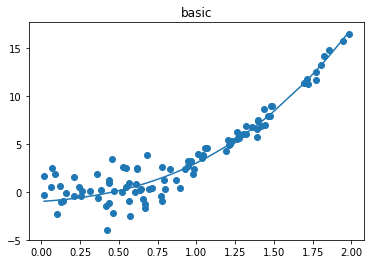
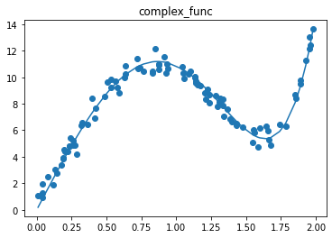
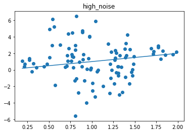
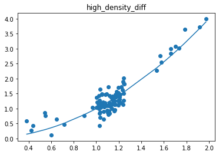
Now we want to look at how the different query strategies determine which sample to query. We do so by looking at the utility assigned by each query strategy for querying a samples. The assigned utility is displayed by the lightgreen line matching the axis to the right. The unlabeled samples are lightblue, the already labeled samples are orange, and the samples selected to be queried next is red. The model prediction, build by the orange samples, are displayed in black.
In this section a small evaluation of the query behavior of the above presented query strategies is given based on the basic data set.
GreedySamplingX queries labels quiet uniformly over the feature space creating utility spikes evenly between the labeled samples across the feature space.
GreedySamplingTarget has a strong tendency to query labels where the target values are steep if the function is monotone, since there the target values differ the most from the prediction.
QueryByCommittee only queries, where some target data is available, slowly gaining diversity. This happens because all the learners share the same prior and thus do not differ, where no target data exist.
KLDivergenceMaximization seems to rely on the steepness of the target data the density and the variance, which seems to create a quiet uniform querying density.
[3]:
for variant in ['basic', 'complex_func', 'high_noise', 'high_density_diff']:
print(variant)
true_function, X, noise = settings[variant] # select another data set here
X = X.reshape(-1, 1)
y_true = true_function(X) + noise
X_test = np.linspace(0, 2, num=200).reshape(-1, 1)
qs_s = [
GreedySamplingX(random_state=random_state),
GreedySamplingTarget(random_state=random_state),
QueryByCommittee(random_state=random_state),
KLDivergenceMaximization(
random_state=random_state,
integration_dict_target_val={
"method": "gauss_hermite",
"n_integration_samples": 5,
},
),
]
y = np.full_like(y_true, np.nan)
y_s = [y.copy() for _ in range(len(qs_s))]
reg = NICKernelRegressor(metric_dict={'gamma': 15.0})
for i in range(n_iterations):
fig, axes = plt.subplots(1, len(qs_s), figsize=(20, 5))
axes = [axes, ] if len(qs_s)==1 else axes
for qs, ax, y in zip(qs_s, axes, y_s):
reg.fit(X, y)
indices, utils = call_func(qs.query,
X=X,
y=y,
reg=reg,
ensemble=SklearnRegressor(BaggingRegressor(reg, n_estimators=4)),
fit_reg=True,
return_utilities=True,
)
_, utilities_test = call_func(qs.query,
X=X,
y=y,
reg=reg,
ensemble=SklearnRegressor(BaggingRegressor(reg, n_estimators=4)),
candidates=X_test,
fit_reg=True,
return_utilities=True,
)
old_is_lbld = is_labeled(y)
y[indices] = y_true[indices]
is_lbld = is_labeled(y)
ax_t = ax.twinx()
ax_t.plot(X_test, utilities_test.flatten(), c='green')
ax.scatter(X[~is_lbld], y_true[~is_lbld], c='lightblue')
ax.scatter(X[old_is_lbld], y[old_is_lbld], c='orange')
ax.scatter(X[indices], y[indices], c='red')
y_pred, y_std = reg.predict(X_test, return_std=True)
ax.plot(X_test, y_pred, c='black')
if i == 0:
ax.set_title(qs.__class__.__name__, fontdict={'fontsize': 15})
plt.show()
basic
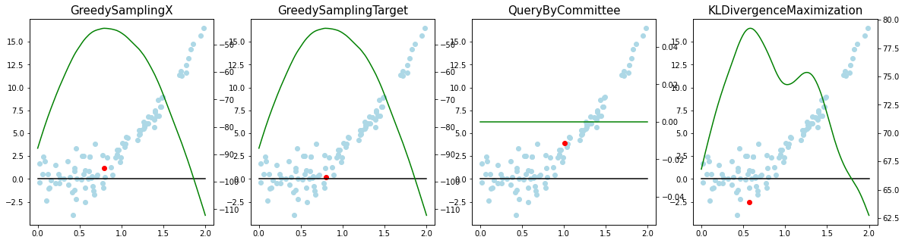
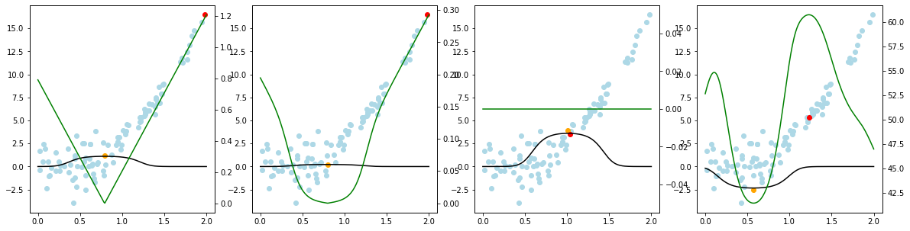
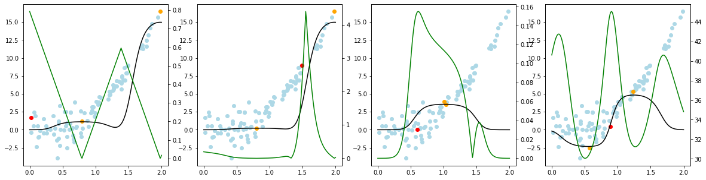
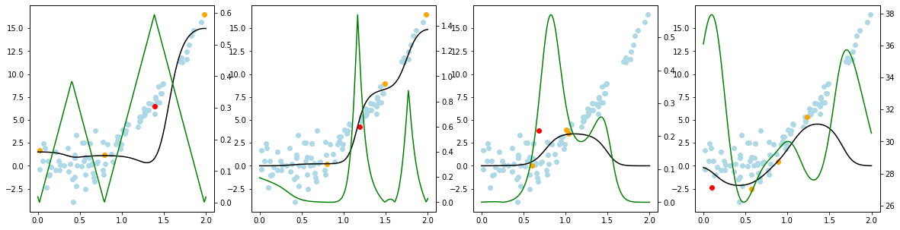
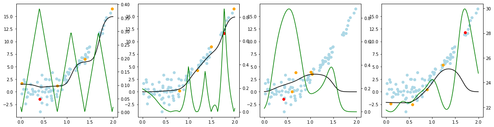
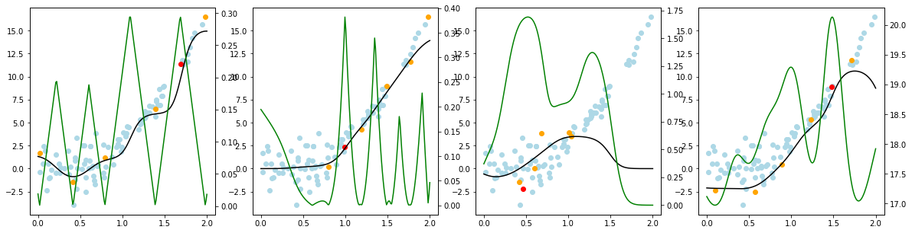
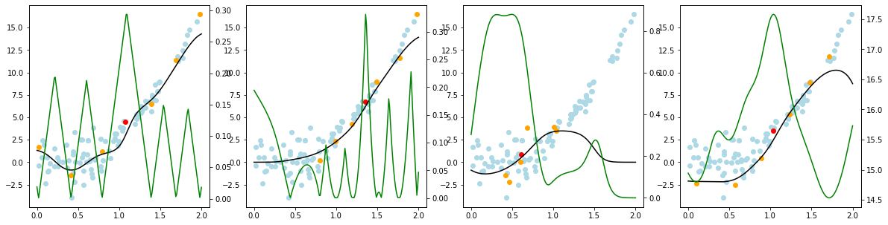
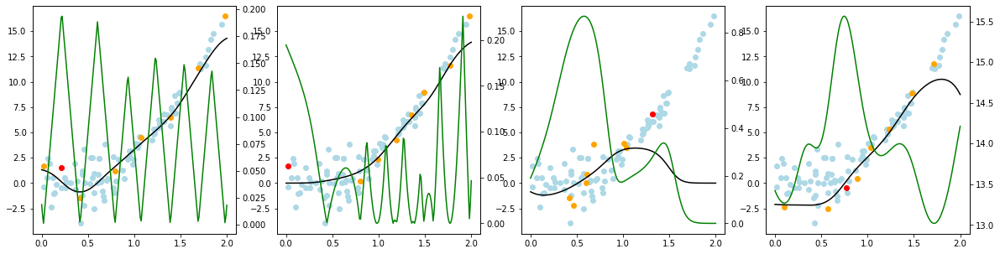
complex_func
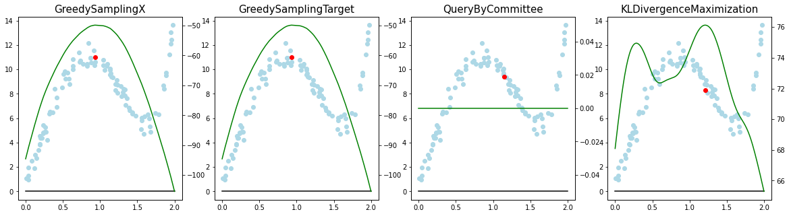
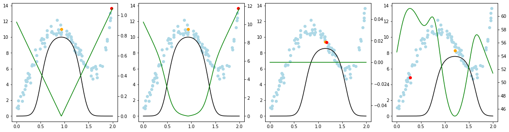
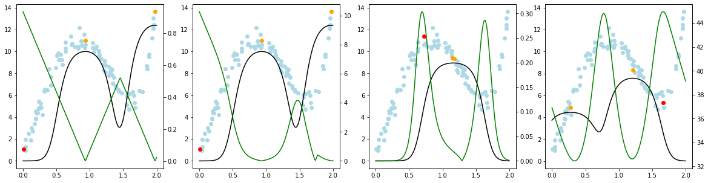
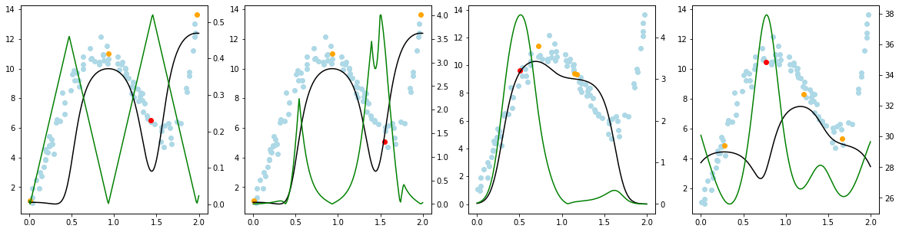
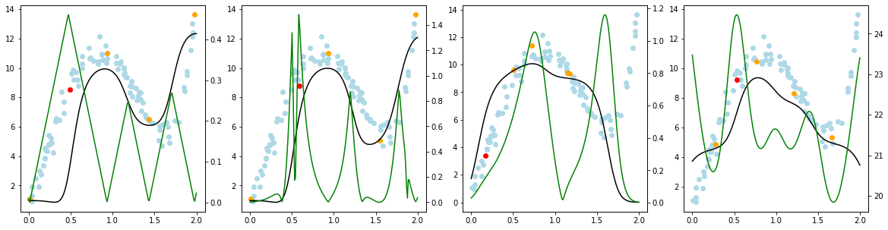
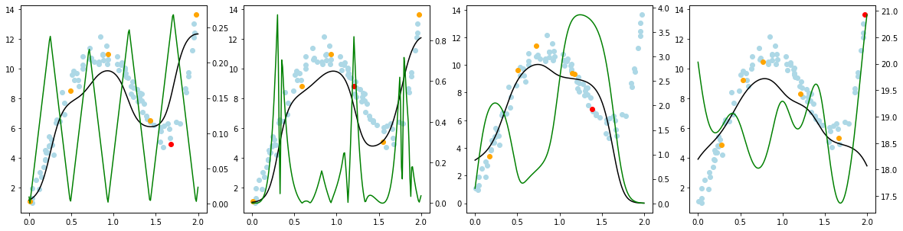
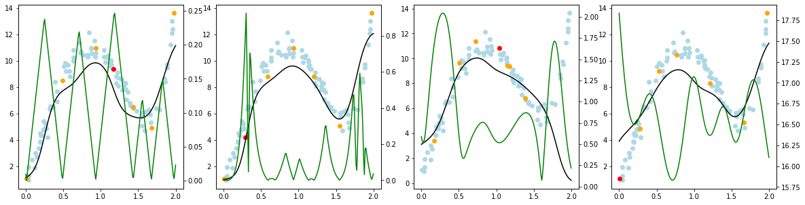
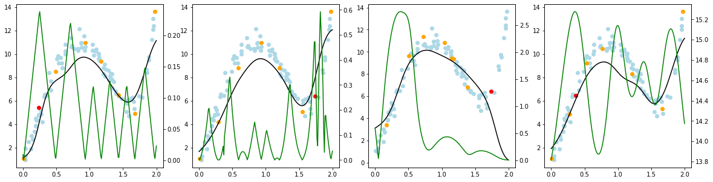
high_noise
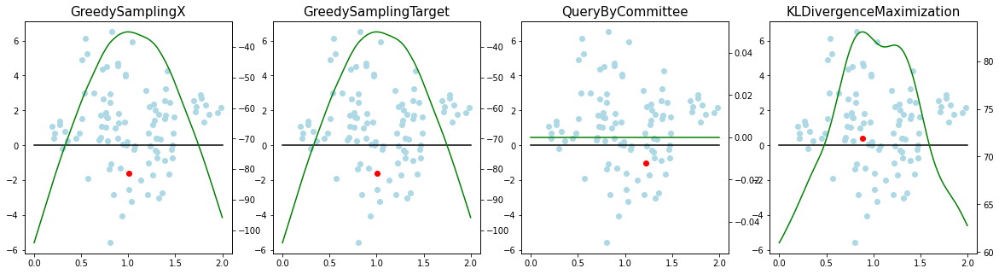
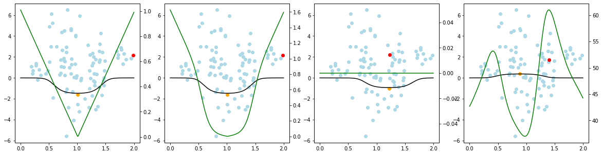
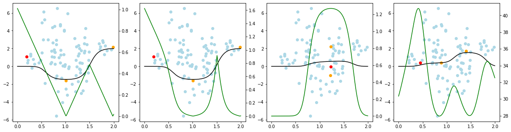
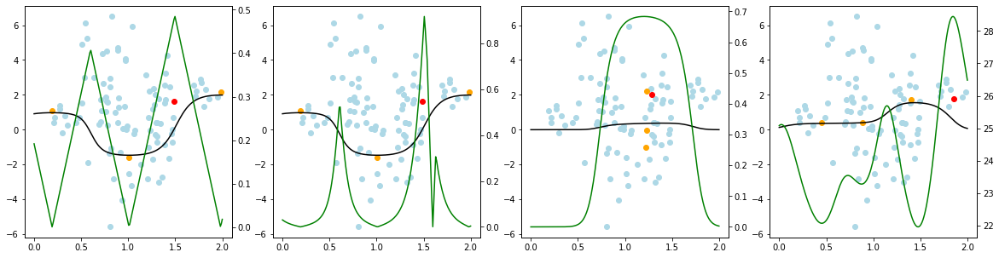
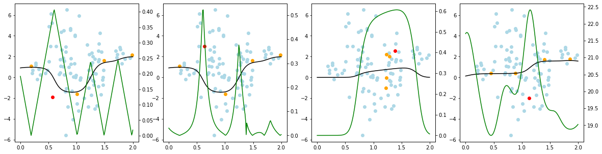
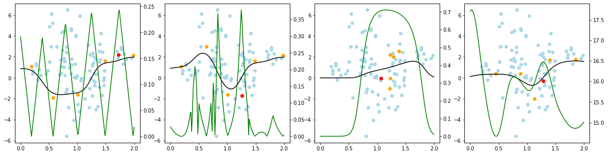
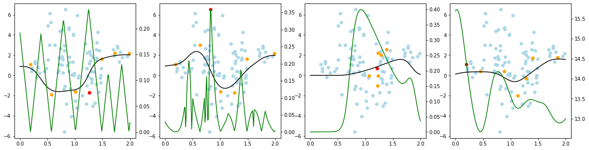
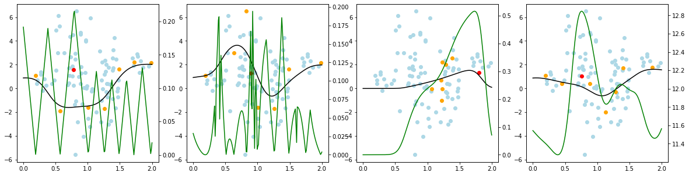
high_density_diff
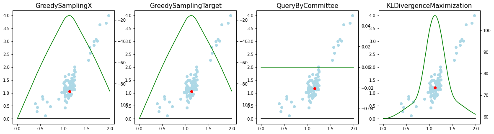
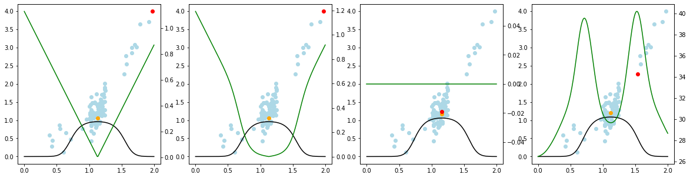
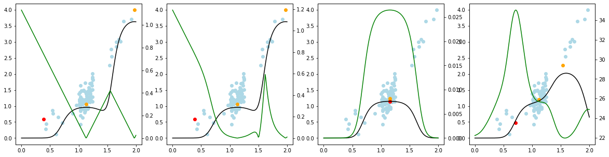
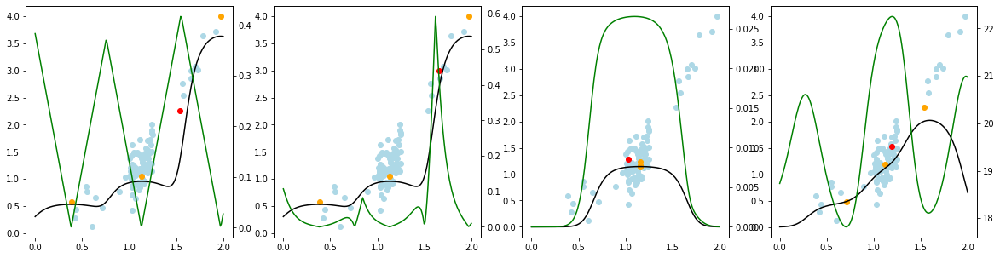
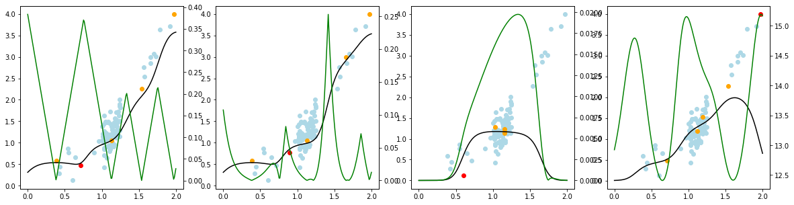
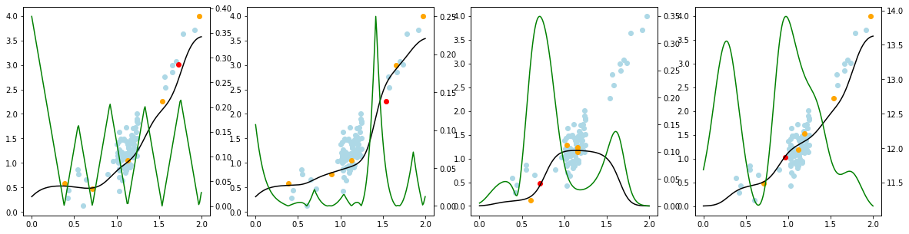
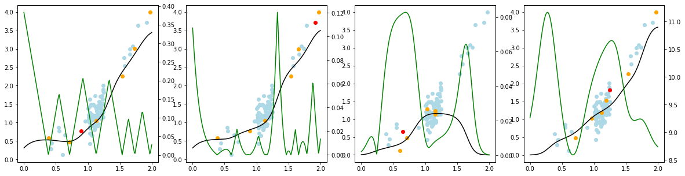
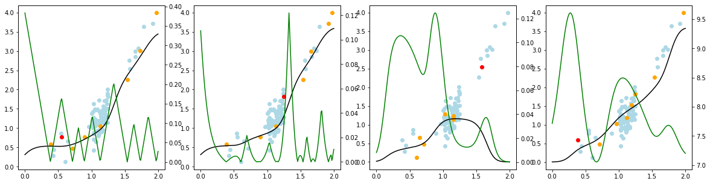